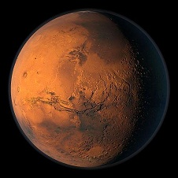

Марс
|  |
| Macca: |
6,4*1023кг.
(10,7% Земной) |
| Диаметр: |
6670 км. (53% Земного) |
| Плотность: |
3,95
г/см3 |
| Температура поверхности: |
-23oC (средняя), -150oC (на
полюсах),0oC (на экваторе) |
| Длина суток: |
24,6229 часа |
| Расстояние от
Cолнца: |
1,5237а.е.228
млн.км.) |
| Время обращения по
орбите: |
687 земных суток |
| Скорость вращения по
орбите: |
24,1 км/c |
| Ускорение свободного
падения: |
3,7
м/c2 |
|
Марс - четвертая планета от Солнца, похожая на Землю, но меньше по величине и холоднее. На Марсе имеются глубокие каньоны, гигантские вулканы и обширные пустыни. Вокруг Красной планеты, как еще называют Марс, летают две небольшие луны: Фобос и Деймос. Марс - это следующая за Землей планета, если считать от Солнца, и единственный, кроме Луны космический мир, который уже можно достичь при помощи современных ракет. Для астронавтов это путешествие длиной в 4 года могло бы явиться следующим рубежом в исследовании космического пространства. Вблизи экватора Марса, в районе называемом Тарсис, расположены вулканы колоссальных размеров. Тарсис - название, которое астрономы дали возвышенности, имеющей 400 км. в ширину и около 10 км. в высоту. На этом плато расположено четыре вулкана, каждый из которых просто гигант в сравнении с любым земным вулканом. Самый грандиозный вулкан Тарсиса, Гора Олимп, возвышается над окружающей местностью на 27 км. Около двух третей поверхности Марса представляет собой горную местность с большим количеством кратеров, возникших от ударов и окруженных обломками твердых пород. В древние времена на Марсе было много воды, по поверхности этой планеты текли большие реки. На Южном и Северном полюсах Марса лежат ледяные шапки. Но этот лед состоит не из воды, а из застывшего атмосферного углекислого газа (застывает при температуре -100 C).